Diseños con discontinuidades
Inferencia Causal
Centro de Investigación y Docencia Económicas
Maestría en Economía
Diseños con discontinuidades
Motivación: edad legal para tomar en EU
En Estados Unidos la edad legal para tomar es de 21 años
Claramente no podemos realizar un experimento para estudiar esta relación causal
En DID vimos una aproximación al explotar la variación geográfica y temporal del cambio en las leyes de acceso al alcohol
Otra manera de aproximar el problema es explotar la discontinuidad en el acceso legal al alcohol justo a los 21 años
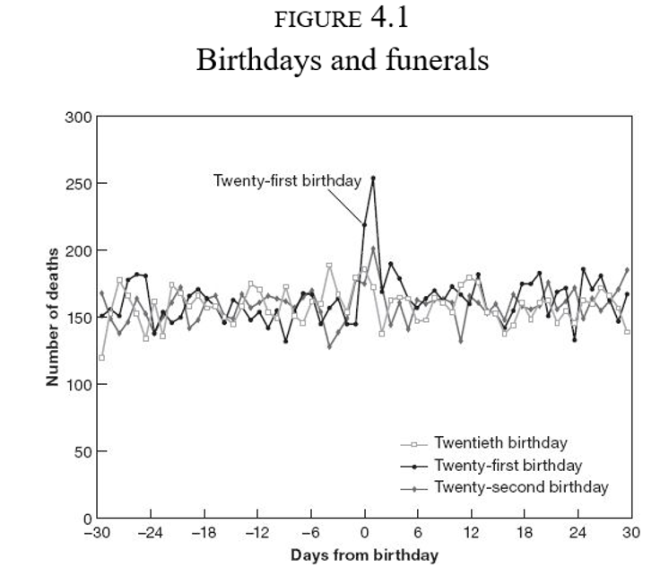
Motivación: edad legal para tomar en EU
Algo pasa en el cumpleaños 21
¿Podemos pensar que es el efecto fiesta?
Hay una tendencia a la baja a ambos lados de la discontinuidad
Sin embargo, hay un claro salto en la tasa de mortalidad a los 21 años
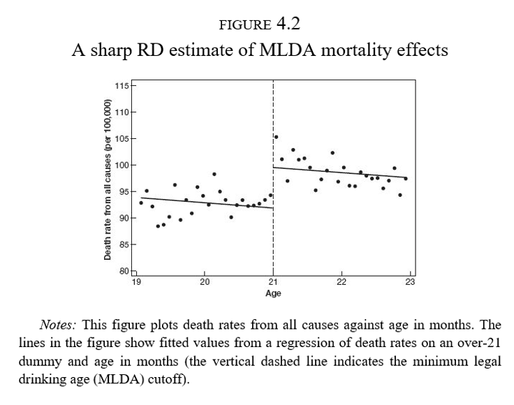
Discontinuidades nítidas
Discontinuidades nítidas
- \(D_a\) indica el estatus de tratamiento
\[ D_a = \begin{cases} 1 & \text{si } a \geq 21 \\ 0 & \text{si } a < 21 \end{cases} \]
\(a\) es conocida como running variable, score, variable de selección, variable de asignación, etc.
Llamamos corte o umbral al valor \(a_0=21\)
El tratamiento es una función determinística de \(a\)
- Si conocemos \(a\) entonces conocemos \(D_a\)
El tratamiento es discontinuo en \(a_0\)
- No importa qué tanto nos acerquemos al corte, el estatus de tratamiento no cambia hasta cruzar \(a_0\)
Discontinuidades nítidas y regresión
Muchas cosas cambian con la edad
Riesgo de enfermedades, muerte por otras causas
Usamos regresión para aislar los efectos de la regla
\[ \bar{M}_a=\alpha+\rho D_a + \gamma a + \varepsilon_a \]
\(\bar{M}_a\) es la tasa de mortalidad (por cada 100 mil habitantes) a la edad \(a\), medida en meses
\(\rho\) captura el salto en la mortalidad a los 21 años
\(\hat{\rho}=7.66\) son muertes adicionales por cada 100 mil habitantes a los 21 años
Diferencias respecto a otros diseños
En los diseños experimentales generamos grupos estadísticamente similares en una serie de características \(X\) y que difieren solo en el estatus de tratamiento
En los métodos de regresión y de matching, controlamos por un vector \(X\) y requerimos que haya soporte común, es decir, que haya individuos tratados y no tratados para cada valor de \(X\)
En DID, para cada periodo de análisis post tratamiento, comparamos a los individuos tratados con algún grupo de comparación no tratado
En los diseños con discontinuidades no hay valores de \(a\) para los que observemos individuos en ambos estados del tratamiento
De forma similar a los diseños experimentales con cumplimiento imperfecto, la interpretación de los efectos en los diseños con discontinuidades es la de un efecto local, en la vecindad de \(a_0\)
No linealidad vs discontinuidad
En los paneles A y B hay un salto en \(E[Y|a]\) en el corte, con una relación lineal y no lineal, respectivamente
En el panel C, \(E[Y|a]\) es continua pero muy pronunciada cerca de \(a_0\), por lo que ajustar una recta a cada lado (líneas discontinuas) nos llevaría a inferir un salto donde no existe
Al usar un diseño con discontinuidad debemos asegurarnos de que estamos identificando una discontinuidad y no una no linealidad
Modelar la no linealidad (enfoque original)
Concentrarnos solo en una ventana cercana a \(a_0\) con métodos no paramétricos (enfoque más moderno)
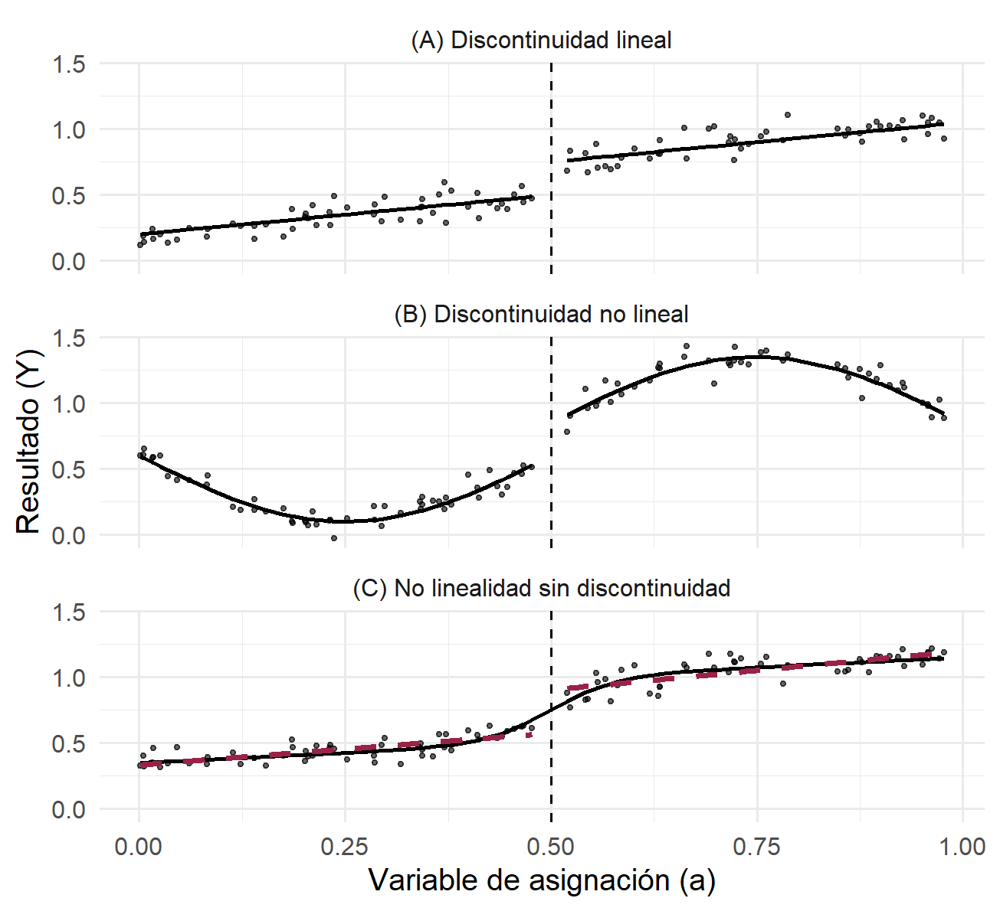
No linealidades
Podemos usar polinomios de \(a\)
Idealmente, las conclusiones no deberían cambiar de acuerdo al grado del polinomio usado
La recomendación práctica es intentar varias especificaciones y no solo la que se ajuste más a nuestras expectativas de los resultados
La gráfica de mortalidad por edad parece tener una leve curvatura a la derecha de \(a_0\)
Podemos ajustar directamente un polinomio de la edad:
\[ \bar{M}_a=\alpha+\rho D_a + \gamma_1 a + \gamma_2 a^2 + \varepsilon_a \]
No linealidades
- O podemos especificar una pendiente diferente para \(a\) antes y después de \(a_0\):
\[ \bar{M}_a=\alpha+\rho D_a + \gamma(a-a_0) + \lambda[(a-a_0)D_a] + \varepsilon_a \]
- Notemos que en este caso el efecto del tratamiento es:
\[ \rho+\lambda(a-a_0) \]
Es decir, un efecto que depende de la distancia con \(a_0\)
Sin embargo, ¿qué tan válido es evaluar el efecto en, digamos, \(a=30\)? ¿O en \(a=10\)?
No linealidades
- Podemos emplear una combinación de no linealidades y cambios en pendiente:
\[ \begin{aligned} \bar{M}_a&=\alpha+\rho D_a + \gamma_1(a-a_0) +\gamma_2(a-a_0)^2+\lambda_1[(a-a_0)D_a]+ \lambda_2[(a-a_0)^2D_a] + \varepsilon_a \end{aligned} \]
En esta especificación los términos lineal y cuadrático cambian en \(a_0\)
Notemos que en este caso el efecto del tratamiento es:
\[ \rho+\lambda_1(a-a_0)+\lambda_2(a-a_0)^2 \]
- En los dos casos anteriores, regularmente se interpreta solo a \(\rho\) como el efecto del tratamiento
No linealidades
Con el polinomio cuadrático interactuado, \(\hat{\rho}=9.55\)
Modelo más elaborado con mejor ajuste
Es evidente gráficamente que hay un salto a los 21 años y una caída suave después
¿Qué tan robustos son los resultados?
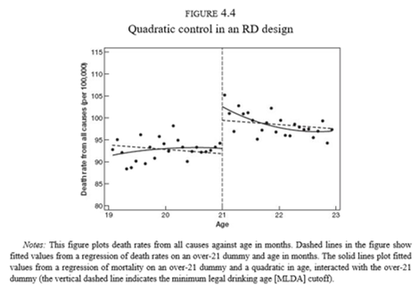
Efectos estimados
Edades 19-22
|
Edades 20-21
|
|||
|---|---|---|---|---|
| Variable dependiente | (1) | (2) | (3) | (4) |
| Todas las muertes | 7.66 (1.51) | 9.55 (1.83) | 9.75 (2.06) | 9.61 (2.29) |
| Accidentes de vehículos de motor | 4.53 (0.72) | 4.66 (1.09) | 4.76 (1.08) | 5.89 (1.33) |
| Suicidio | 1.79 (0.50) | 1.81 (0.78) | 1.72 (0.73) | 1.30 (1.14) |
| Homicidio | 0.10 (0.45) | 0.20 (0.50) | 0.16 (0.59) | -0.45 (0.93) |
| Otras causas externas | 0.84 (0.42) | 1.80 (0.56) | 1.41 (0.59) | 1.63 (0.75) |
| Todas las causas internas | 0.39 (0.54) | 1.07 (0.80) | 1.69 (0.74) | 1.25 (1.01) |
| Causas relacionadas con el alcohol | 0.44 (0.21) | 0.80 (0.32) | 0.74 (0.33) | 1.03 (0.41) |
| Controles | edad | edad, edad², interactuadas | edad | edad, edad², interactuadas |
| Tamaño de muestra | 48 | 48 | 24 | 24 |
| Nota: Coeficientes de un indicador de edad mayor o igual a 21 años en regresiones de la tasa de mortalidad por mes de edad, según causa. Los controles de edad se interactúan con el indicador de mayor de 21 en las columnas (2) y (4). Errores estándar entre paréntesis. Fuente: adaptado de la tabla 4.1 de Angrist & Pischke (2014), con datos de Carpenter & Dobkin (2009). | ||||
Efectos estimados
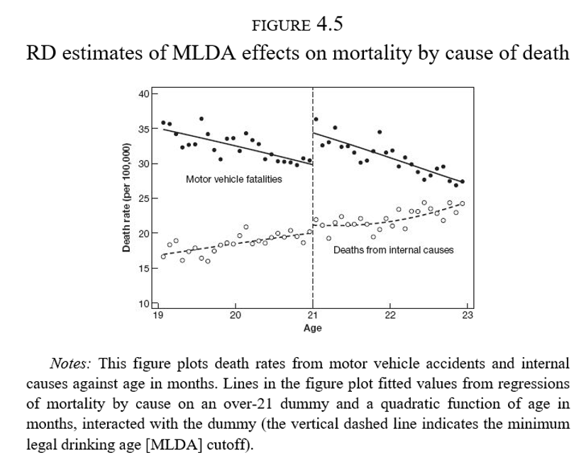
Ejemplo: transferencias gubernamentales y apoyo político
Transferencias gubernamentales y apoyo político
Manacorda, Miguel & Vigorito (2011), “Government Transfers and Political Support”, American Economic Journal: Applied Economics
¿Los programas gubernamentales generan lealtades?
Programa Nacional de Emergencia Social (PANES), focalizado con base en un índice de pobreza
Existe una discontinuidad en el acceso al programa
Contexto
¿Qué pasó en Uruguay?
Crisis económica a inicios de los 2000
En abril de 2005 el Frente Amplio toma el poder
Expansión del gasto público contra la pobreza (0.41% del PIB)
PANES
Ingreso ciudadano: alrededor de US$70 mensuales
Otros componentes: alimenticio, empleo, salud, etc.
Alcanzó al 10% de los hogares y 14% de la población
Regla de asignación
¿Cómo se decidió quién recibiría el PANES?
Focalizado a los más pobres
Modelo probit de ingreso predicho
El ingreso observado puede ser un indicador muy ruidoso
Se asignó el programa solo a aquellos por debajo de un umbral de ingreso predicho
Datos
Se recolectó información de los hogares alrededor de la discontinuidad (tratados y no tratados)
Se realizaron dos rondas de seguimiento en 2006-07 y en 2008
Variable de interés: apoyo político al gobierno en turno
La figura muestra que la elegibilidad determina casi por completo la participación, es decir, tenemos un diseño nítido
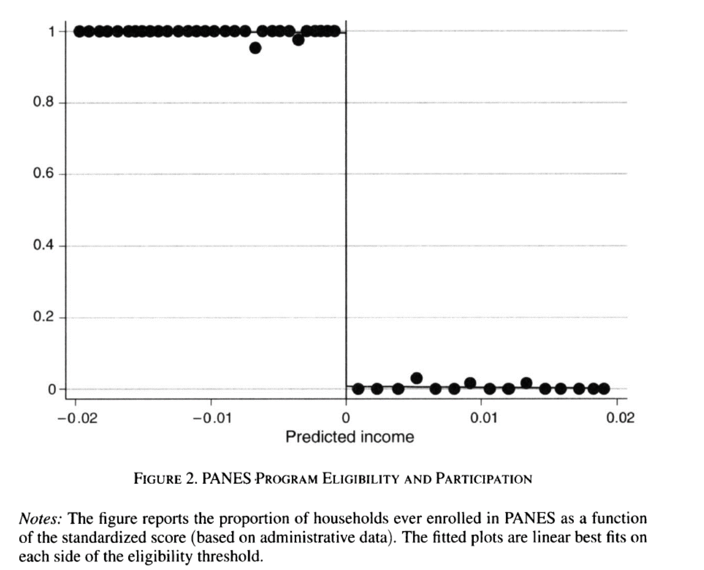
¿Cómo medir el apoyo político?
Construcción de un índice del 0 al 1
Justo debajo del umbral, los hogares elegibles tenían un apoyo político cercano a 0.90
Justo arriba del umbral, los no elegibles mostraban un apoyo de 0.77
Esto implica un incremento de 13 puntos porcentuales
Evidencia gráfica en 2007
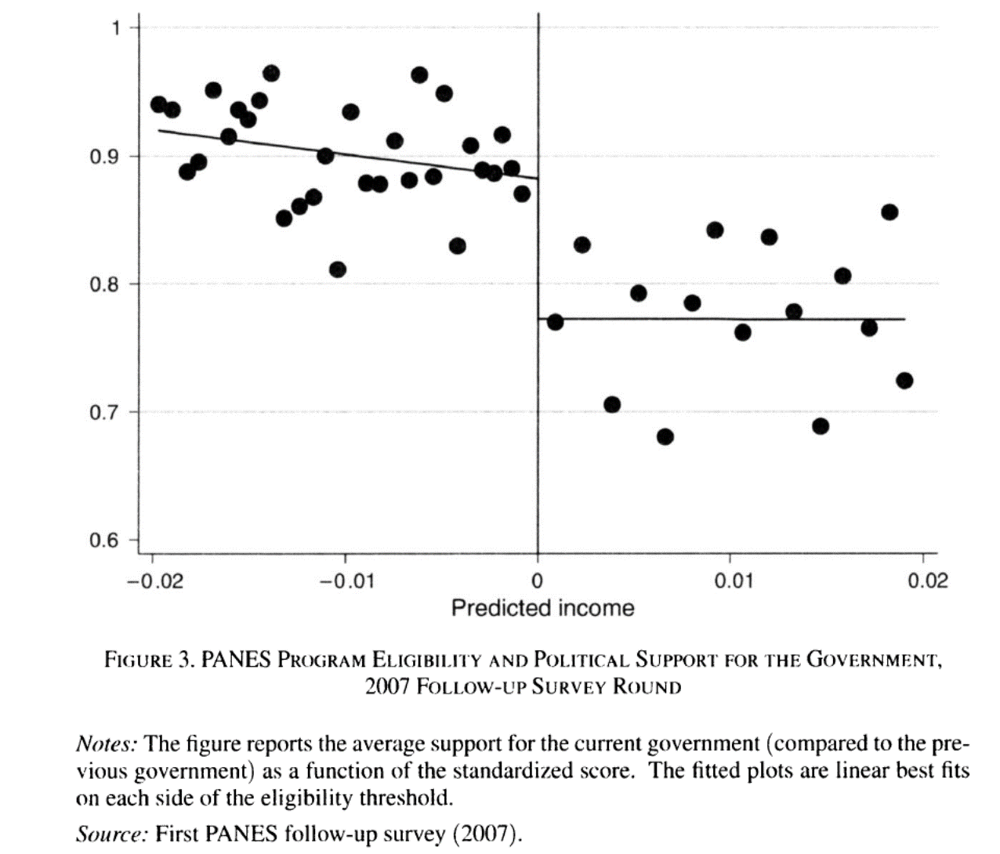
Resultados de regresión
\(S_i\) es el score (ingreso predicho) del hogar \(i\) y \(E\) es el umbral de elegibilidad de PANES
\(N_i=S_i-E\) es el score normalizado; los hogares con \(N_i<0\) son elegibles
\[ y_i=\beta_0+\beta_1 \mathcal{I}(N_i<0) + f_1(N_i) + \mathcal{I}(N_i<0)f_2(N_i)+u_i \]
\(f_1\) y \(f_2\) son polinomios del score normalizado
\(\beta_1\) captura el impacto del programa
Efectos estimados
Coeficiente (error estándar)
|
||||||||
|---|---|---|---|---|---|---|---|---|
| Variable dependiente | Media no elegibles | (1) | (2) | (3) | (4) | (5) | (6) | Observaciones |
| Recibió PANES alguna vez, 2005-2007 | 0.004 | 0.993*** | 0.987*** | 0.995*** | 0.993*** | 0.988*** | 0.998*** | 2,232 |
| (0.002) | (0.005) | (0.005) | (0.003) | (0.005) | (0.005) | |||
| Apoyo al gobierno, 2007 (durante el programa) | 0.77 | 0.129*** | 0.110*** | 0.130*** | 0.126*** | 0.103*** | 0.125*** | 2,089 |
| (0.013) | (0.026) | (0.040) | (0.014) | (0.027) | (0.043) | |||
| Apoyo al gobierno, 2008 (después del programa) | 0.73 | 0.118*** | 0.100*** | 0.093** | 0.119*** | 0.096*** | 0.081* | 1,948 |
| (0.030) | (0.043) | (0.016) | (0.031) | (0.045) | (0.045) | |||
| Controles del score | Ninguno | Lineal | Cuadrático | Ninguno | Lineal | Cuadrático | ||
| Otros controles | No | No | No | Sí | Sí | Sí | ||
| Nota: Efecto de la elegibilidad a PANES (score por debajo del umbral) sobre la recepción del programa y el apoyo político. Las columnas (1) a (3) incluyen un polinomio de grado 0, 1 y 2 del score normalizado, interactuado con el indicador de elegibilidad; las columnas (4) a (6) agregan características previas al tratamiento. Errores estándar agrupados por score entre paréntesis. *** p<0.01, ** p<0.05, * p<0.1. Fuente: adaptado de la tabla 1 de Manacorda, Miguel & Vigorito (2011). | ||||||||
Evidencia gráfica en 2008
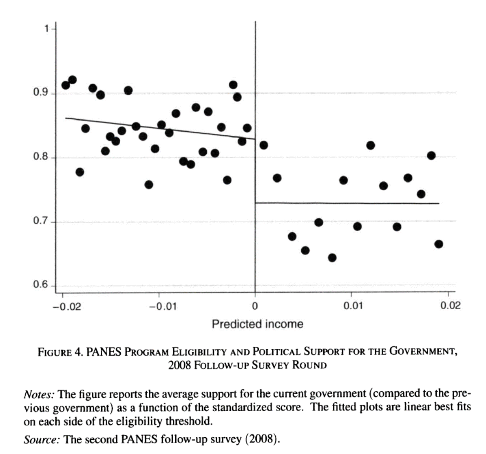
Robustez
- Si el diseño es válido, la elegibilidad no debería predecir las características de los hogares antes del programa (2005)
| Variable dependiente | Media no elegibles | Coeficiente | Error estándar | Observaciones |
|---|---|---|---|---|
| Log del ingreso per cápita | 6.34 | -0.062 | (0.059) | 2,150 |
| Años de educación promedio del hogar (16 años o más) | 4.05 | 0.135 | (0.198) | 2,162 |
| Tamaño del hogar | 3.03 | -0.350 | (0.242) | 2,232 |
| Edad promedio del hogar | 31.68 | -1.195 | (2.159) | 2,232 |
| Quien responde es mujer | 0.70 | -0.025 | (0.057) | 2,231 |
| Años de educación de quien responde | 6.43 | 0.228 | (0.307) | 2,206 |
| Edad de quien responde | 43.63 | -0.929 | (1.512) | 2,231 |
| No respuesta sobre apoyo político (2007) | 0.41 | 0.037 | (0.044) | 2,372 |
| No respuesta sobre apoyo político (2008) | 0.46 | 0.049 | (0.048) | 2,372 |
| Votó en las elecciones de 2004 | 0.92 | 0.013 | (0.023) | 2,200 |
| Nota: Regresiones de características previas al programa en el indicador de elegibilidad, con la especificación de la columna (2) de la tabla anterior. Fuente: adaptado de la tabla 2 de Manacorda, Miguel & Vigorito (2011). |
Estimación con discontinuidades nítidas
Discontinuidades nítidas
Generalizamos la notación del ejemplo del alcohol: \(x_i\) es la variable de asignación, \(c_0\) es el corte y \(y_i\) es el resultado
Motivamos el uso de una regresión con el siguiente modelo
\[ D_i = \begin{cases} 1 & \text{si } x_i \geq c_0 \\ 0 & \text{si } x_i < c_0 \end{cases} \]
- Si asumimos efectos de tratamiento constantes
\[ \begin{aligned} y_i^0&=\alpha + \beta x_i + \varepsilon_i \\ y_i^1&= y_i^0 + \delta \end{aligned} \]
Discontinuidades nítidas
- Con nuestro modelo de resultados potenciales
\[ \begin{align*} y_i &= y_i^0 + (y_i^1 - y_i^0)D_i \\ &= \alpha + \beta x_i + \varepsilon_i + (\alpha + \beta x_i + \varepsilon_i + \delta - \alpha - \beta x_i - \varepsilon_i)D_i \\ &= \alpha + \beta x_i + \delta D_i + \varepsilon_i \end{align*} \]
- Como solo usamos la información en la vecindad del corte de elegibilidad, definimos el efecto del tratamiento en el corte como
\[ \delta^{RD,N} = E(y_i^1 - y_i^0 | x_i=c_0) \]
- Bajo el supuesto de continuidad, que formalizamos más adelante, este efecto se identifica con los límites laterales de lo que sí observamos
\[ \delta^{RD,N} = \lim_{x\downarrow c_0} E(y_i|x_i = x) - \lim_{x\uparrow c_0} E(y_i|x_i = x) \]
Discontinuidades nítidas
El efecto estimado es un efecto local, en el sentido de que nuestras conclusiones son válidas solo en la vecindad alrededor de \(c_0\)
A diferencia de otros diseños, aquí no hay traslape
Recurrimos a la extrapolación
Las líneas discontinuas son los resultados potenciales que no observamos, pero extrapolamos usando los puntos que sí observamos
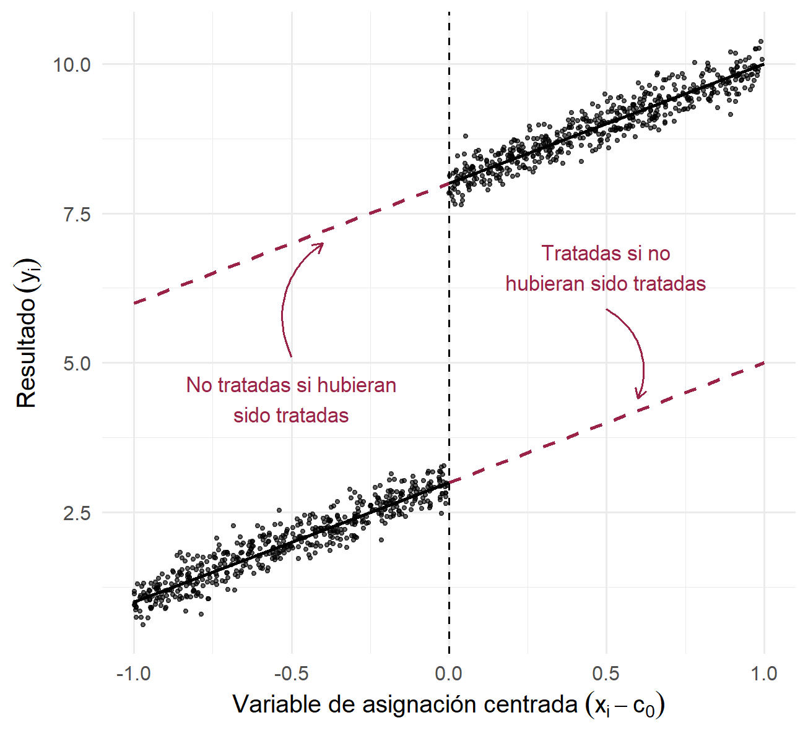
Supuestos de identificación
Supuesto 1. Continuidad: \(E(y_i^0|x_i)\) y \(E(y_i^1|x_i)\) son funciones suaves y continuas de \(x_i\) en el corte \(c_0\)
Los resultados potenciales no saltan en el corte
El único salto en \(E(y_i|x_i)\) se debe al tratamiento
Esto implica que no debe haber otras intervenciones o variables omitidas que salten en \(c_0\)
En el ejemplo del acceso al alcohol, debemos descartar que haya otros factores (como enfermedades) que se disparen a los 21 años
Supuesto 2. SUTVA
Estimación paramétrica
Se acostumbra construir la versión centrada de la variable de asignación: \(\tilde{x}_i=x_i-c_0\)
Para permitir no linealidades en \(x_i\), podríamos especificar polinomios de alto grado
Esta es una mala idea, como lo muestran Gelman & Imbens (2019), “Why High-Order Polynomials Should Not Be Used in Regression Discontinuity Designs”
Estimación paramétrica
- A partir del modelo para \(y_i\), donde \(\alpha\) es la ordenada sin centrar:
\[ \begin{align} y_i&=\alpha + \beta x_i + \delta D_i + \varepsilon_i \\ & = \alpha + \beta c_0 + \beta (x_i - c_0) + \delta D_i + \varepsilon_i \\ & = \alpha^* + \beta \tilde{x}_i + \delta D_i + \varepsilon_i \end{align} \] con \(\alpha^*=\alpha+\beta c_0\), la ordenada en el corte
Recentrar solo cambia la ordenada al origen mientras que \(\beta\) y \(\delta\) no cambian
En adelante, para simplificar, escribimos \(\alpha\) para la ordenada en el corte
Estimación paramétrica
- Permitimos pendientes distintas antes y después de \(c_0\)
\[ \begin{align} E(y_i^0|x_i)&=\alpha + \beta_{01} \tilde{x}_i \\ E(y_i^1|x_i)&=\alpha + \delta + \beta_{11} \tilde{x}_i \end{align} \]
con \(\alpha=E(y_i^0|x_i=c_0)\)
- Usando la ecuación de resultados potenciales
\[ \begin{align} E(y_i|x_i)=\alpha + \beta_{01} \tilde{x}_i + (\alpha + \delta + \beta_{11} \tilde{x}_i-\alpha - \beta_{01} \tilde{x}_i) D_i \end{align} \]
- Dando lugar a la regresión
\[ y_i = \alpha + \beta_{01} \tilde{x}_i + \delta D_i + \beta_1^*\tilde{x}_i D_i+ \varepsilon_i \] donde \(\beta_1^*=\beta_{11}-\beta_{01}\)
Estimación paramétrica
Esto es, una regresión de \(y_i\) en \(D_i\), \(\tilde{x}_i\) y la interacción \(\tilde{x}_i D_i\)
Interpretamos \(\delta\) como el salto en la función o el efecto causal
Con un polinomio de segundo orden tendríamos
\[ y_i = \alpha + \beta_{01} \tilde{x}_i + \beta_{02} \tilde{x}_i^2 + \delta D_i + \beta_1^*\tilde{x}_i D_i+ \beta_2^*\tilde{x}_i^2 D_i+ \varepsilon_i \] donde \(\beta_{02}\) y \(\beta_{12}\) son los coeficientes del término cuadrático antes y después de \(c_0\), y \(\beta_2^*=\beta_{12}-\beta_{02}\)
Estimación no paramétrica
Muchos autores cuestionan la estimación paramétrica que hemos tratado hasta ahora pues el sesgo puede ser sustancial
En muchas aplicaciones se prefiere usar una regresión lineal local (no paramétrica)
Es una regresión restringida a una ventana alrededor del corte, con pesos que dependen de la distancia de cada observación a \(c_0\)
Consiste en estimar
\[\hat{a}_{+}, \hat{b}_{+} = \arg \min_{a,b}\sum_{i=1}^n(y_i-a-b(x_i-c_0))^2K\left(\frac{x_i-c_0}{h}\right)1(x_i\geq c_0)\]
Y lo mismo para \(x_i<c_0\), de donde obtenemos \(\hat{a}_{-}\), para estimar \(\hat{\delta}=\hat{a}_{+}-\hat{a}_{-}\)
El parámetro \(h\) indica el ancho de banda, que podemos escoger con criterios como minimizar el error cuadrático medio o validación cruzada
Estimación no paramétrica
En general, la regresión local se estima en cada valor \(x\), pero en el diseño discontinuo solo nos interesa la predicción en \(c_0\) por cada lado
Los pesos vienen de una función kernel \(K(u)\), con \(u=(x_i-c_0)/h\)
Todos los kernels, salvo el gaussiano, dan peso cero fuera de \(|u|\leq 1\)
En la práctica,
rdrobustelige el \(h\) óptimo y estima la regresión local, con kernel triangular por defecto
Kernels en R
u <- seq(-1.5, 1.5, length.out = 601)
dentro <- as.numeric(abs(u) <= 1)
kernels <- tibble(
u = u,
Uniforme = 0.5 * dentro,
Triangular = (1 - abs(u)) * dentro,
Epanechnikov = 0.75 * (1 - u^2) * dentro,
Gaussiano = dnorm(u)) |>
pivot_longer(-u, names_to = "kernel", values_to = "K")
kernels |>
ggplot(aes(u, K, color = kernel)) +
geom_line(linewidth = 1.2) +
labs(x = expression(u == (x[i] - c[0]) / h),
y = "K(u)", color = "Kernel") +
theme_minimal() +
theme(legend.position = "bottom")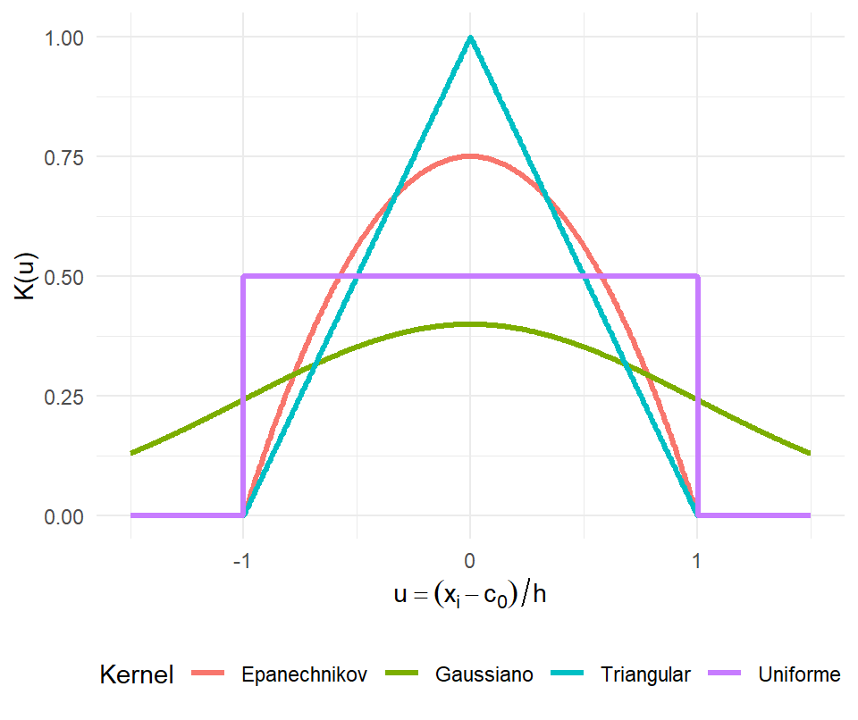
Últimos consejos
Hacer estudios placebo cuando sea posible: probar la especificación principal en variables que no deberían verse afectadas por el tratamiento
Mostrar que no haya una discontinuidad en la densidad de la variable de asignación en el corte, lo que sugeriría manipulación
- La prueba de densidad (McCrary, 2008) contrasta si la densidad de \(x_i\) salta en \(c_0\) (el paquete
rddensityimplementa la versión más reciente)
- La prueba de densidad (McCrary, 2008) contrasta si la densidad de \(x_i\) salta en \(c_0\) (el paquete
Verificar que otras covariables sean continuas alrededor del corte
Discontinuidades difusas
Motivación: la ilusión de la élite
Escuelas de élite, exam schools, altamente competitivas en Nueva York y Boston
Bajas tasas de admisión
¿Cómo diferenciar el valor agregado de la escuela del hecho de que la acta selectividad hace que a estas escuelas asistan solo los alumnos más brillantes?
¡Ojalá pudiéramos asignar alumnos al azar!
Los estudiantes en estas escuelas de élite comparten clases con estudiantes aventajados
La regla de asignación
Cada escuela tiene un corte de puntaje de admisión
En la escuela más competitiva de Boston aquellos estudiantes debajo del corte nunca asisten a dicha escuela
Los que están arriba del corte casi siempre acaban en la BLS
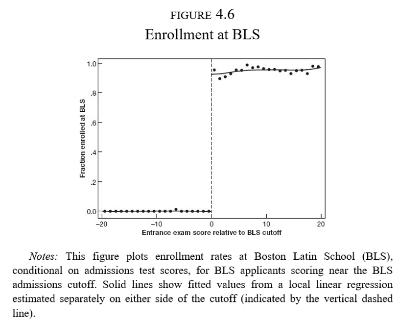
La regla de asignación
- Sin embargo, aquellos que no alcanzan el puntaje mínimo de la BLS acaban de cualquier forma en una escuela de élite
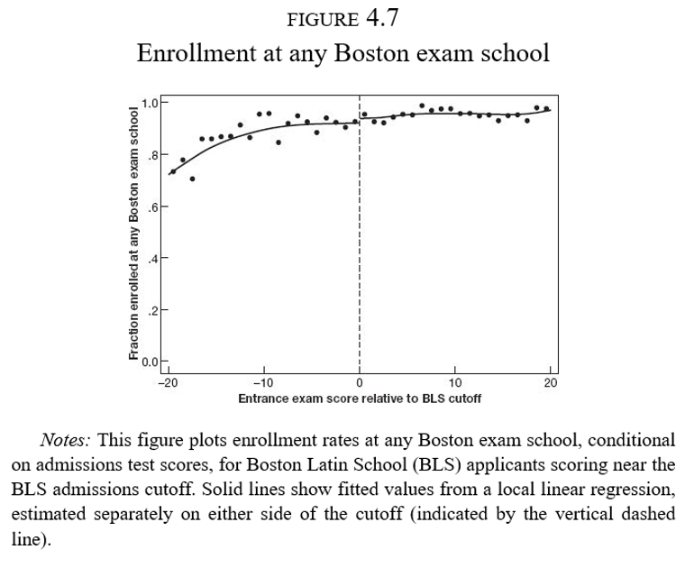
La regla de asignación
Hay una dimensión que genera una discontinuidad: efectos de pares o peer effects
Es una de las preocupaciones más importantes de política educativa en casi cualquier país
Tener buenos (malos) compañeros afecta los resultados del individuo \(i\)
Quienes ingresan a la BLS (séptimo grado) tuvieron compañeros con mejor desempeño en matemáticas cuando iban en cuarto grado
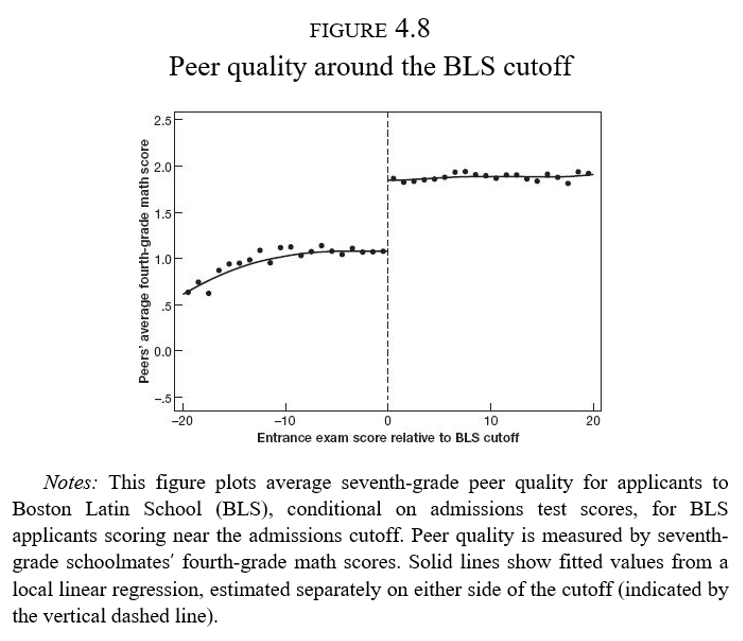
Modelo de efectos de pares
- Un modelo de efectos de pares:
\[Y_i=\theta_0+\theta_1\bar{X}_{(i)}+\theta_2 X_i + u_i\]
\(Y_i\) es el resultado de un examen de matemáticas en el séptimo año del individuo \(i\)
\(X_i\) es el resultado de un examen de matemáticas en el cuarto año del individuo \(i\)
\(\bar{X}_{(i)}\) es el resultado promedio de un examen de matemáticas en el cuarto año de los compañeros de \(i\) sin incluir \(i\)
Otra notación en la literatura escribe esto como \(\bar{X}_{(-i)}\)
Los resultados están estandarizados por lo que los coeficientes se interpretan en términos de desviaciones estándar: \(\hat{\theta}_1=0.25\sigma\)
RD difuso + VI
Problemas
Sabemos que en la discontinuidad, la calidad de los pares cambia drásticamente
Características de los hogares (habilidad de los padres)
Doble causalidad: \(i\) afecta a \(j\) pero \(j\) afecta a \(i\) a la vez
Variables instrumentales:
Queremos conocer el efecto de la calidad de los pares en el desempeño de matemáticas
Usamos el corte mínimo para ser aceptado en BLS como instrumento de la calidad de los pares
Forma reducida
- Si solo usamos el corte para ser aceptado en BLS:
\[Y_i=\alpha_0+\rho D_i + \beta_0 R_i + \epsilon_i\]
Se obtiene \(\hat{\rho}=-0.02\), \(s.e.=0.10\)
Este es un modelo de forma reducida (variable de interés en función de la posición respecto al corte)
Es el efecto causal de estar antes o después del corte
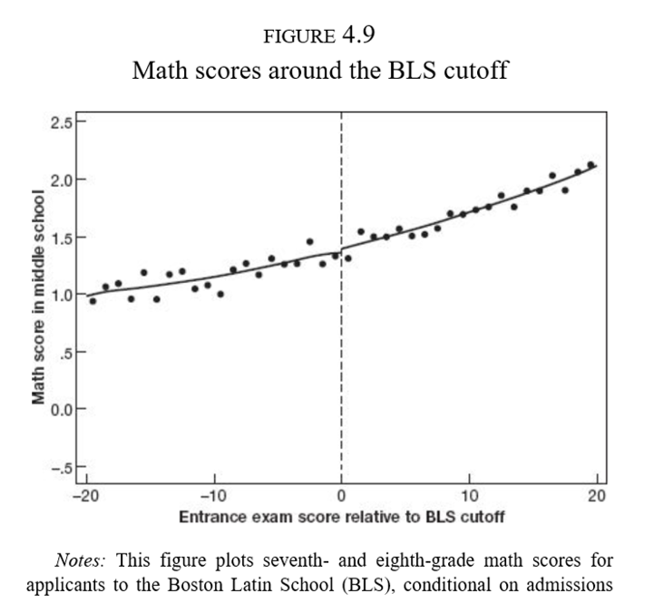
Modelo de VI
- Modelo estructural:
\[Y_i=\alpha_2+\lambda \bar{X}_{(i)} + \beta_2 R_i + \epsilon_{2i}\]
- Con una primera etapa
\[\bar{X}_{(i)}=\alpha_1 + \phi D_i + \beta_1 R_i + \epsilon_{1i}\]
En la primera etapa \(\hat{\phi}=0.80\sigma\), como lo habíamos visto ya en la Figura 4.8
En la segunda etapa \(\hat{\lambda}=-0.023\), \((s.e.=0.13)\)
Modelo de VI
La ilusión
No hay tal ganancia por compartir clase con alumnos brillantes
La gente sigue percibiendo que sus hijos ganan al ir a escuelas de élite
Posiblemente los egresados de estas escuelas tengan mayores ingresos
Las ganancias que se puedan obtener no son vía el efecto de pares o un mejor rendimiento cognitivo
Estimación con discontinuidades difusas
Discontinuidades difusas
- Tenemos un diseño difuso cuando hay un salto en la probabilidad de ser asignado al tratamiento
\[ \begin{align} \lim_{x_i\rightarrow c_0} P(D_i=1|x_i=c_0) \neq \lim_{c_0 \leftarrow x_i} P(D_i=1|x_i=c_0) \\ \end{align} \]
La probabilidad de recibir el tratamiento es discontinua en \(c_0\)
El supuesto de identificación es igual que en el caso nítido, que los resultados potenciales son funciones continuas y suaves en \(c_0\)
Recurrimos a variables instrumentales
Ser asignado al tratamiento se vuelve un instrumento para recibir el tratamiento
\[ P(D_i=1|x_i) = \begin{cases} g_1(x_i) & \mbox{si } x_i \geq c_0 \\ g_0(x_i) & \mbox{si } x_i < c_0 \end{cases} \]
Discontinuidades difusas
- Tenemos entonces una primera etapa
\[ D_i = \gamma_0 + \gamma_1 x_i + \gamma_2 x_i^2 + \rho T_i + \varepsilon_i \]
donde
\[ T_i = \begin{cases} 1 & \mbox{si } x_i \geq c_0 \\ 0 & \mbox{si } x_i < c_0 \end{cases} \]
Discontinuidades difusas
- La forma reducida es
\[ y_i = \beta_0 + \beta_1 x_i + \beta_2 x_i^2 + \delta T_i + u_i \]
- Y la ecuación estructural es
\[ y_i = \pi_0 + \pi_1 x_i + \pi_2 x_i^2 + \lambda D_i + \nu_i \] - En términos de código, hacemos lo mismo que en los diseños nítidos
Resumen
Discontinuidades nítidas: resumen
- RD nítida se usa cuando el tratamiento es una función determinística de una variable \(x\)
\[ D_i = \begin{cases} 1 & \mbox{if } x_i \geq x_0 \\ 0 & \mbox{if } x_i < x_0 \end{cases} \]
\(x_0\) es el umbral o corte
\(D_i\) es una función determinística de \(x_i\) pues una vez que conocemos \(x_i\) entonces conocemos \(D_i\)
\(D_i\) es una función discontinua en \(x_i\) pues no importa que tanto nos acerquemos por la izquierda o por la derecha a \(x_0\), el estado del tratamiento no cambia
Discontinuidades nítidas: resumen
A diferencia de los modelos de otros diseños, no hay valor de \(x_i\) en el que observemos a individuos tratados y no tratados
La interpretación del efecto estimado con diseños discontinuos es un efecto local en la vecindad de \(x_0\), donde podemos tener confianza que los individuos tratados y no tratados son similares en todas las dimensiones excepto en su posición respecto a \(x_0\)
Una especificación flexible permite no confundir una discontinuidad con una no linealidad
En la práctica, suele variarse el orden del polinomio de \(x_i\) hasta de orden 2 o 3 y se espera que los resultados no sean muy sensibles a especificaciones de este
El método no paramétrico consiste en la estimación de \(\rho\) en una vecindad de \(x_0\) usando métodos locales no paramétricos
RD difusa: resumen
RD difusa explota discontinuidades en la probabilidad o valor esperado del tratamiento condicional en una variable
El resultado es que la discontinuidad se convierte en una VI para el estado del tratamiento en vez de una variable que se prende y apaga
\[ P(D_i =1|x_i)= \begin{cases} g_1(x_i) & \mbox{if } x_i \geq x_0 \\ g_0(x_i) & \mbox{if } x_i < x_0 \end{cases} \]
Las funciones \(g_0\) u \(g_1\) difieren en \(x_0\)
Supongamos que \(g_1(x_0)>g_0(x_0)\), es decir, \(x_i\geq x_0\) hace el tratamiento más probable
RD difusa: resumen
- La relación entre el estado de tratamiento y \(x_i\) puede ser escrita como:
\[E(D_i|x_i)=P(D_i=1|x_i)=g_0(x_i)+[g_1(x_i)-g_0(x_i)]T_i\]
con \(T_i=\mathcal{I}(x_i\geq x_0)\)
- Escribiendo las funciones \(g_0\) y \(g_1\) como polinomios flexibles de \(x_i\)
\[E(D_i|x_i)=\gamma_{00}+\gamma_{01}x_i+\gamma_{02}x_i+\ldots+\gamma_{0p}x_i^p +\pi T_i + \gamma_{1}^{*}x_i T_i+ \gamma_{2}^{*}x_i^2 T_i+\ldots+ \gamma_{p}^{*}x_i^p T_i\]
RD difusa: resumen
En la primera etapa podríamos usar \(\{x_iTi, x_i^2 T_i,...,x_i^p T_i\}\) como instrumentos para \(D_i\)
Una primera etapa con interacciones sugeriría emplear una segunda etapa también con interacciones
La versión más simple solo usa \(T_i\) como instrumento
La primera etapa será
\[D_i=\gamma_0+\gamma_1 x_i + \gamma_2 x_i^2 + \ldots + \gamma_p x_i^p + \rho T_i + \xi_{i}\]
- La forma reducida o ITT de este modelo es:
\[y_i=\beta_0+\beta_1 x_i + \beta_2 x_i^2 + \ldots + \beta_p x_i^p + \delta\ T_i + u_{i}\] - Mientras que la ecuación estructural
\[y_i=\pi_0+\pi_1 x_i + \pi_2 x_i^2 + \ldots + \pi_p x_i^p + \lambda\ D_i + u_{i}\] se estima por MC2E usando \(T_i\) como instrumento de \(D_i\)
Diseños con discontinuidades
Inferencia Causal
CIDE · Maestría en Economía
© 2026 Irvin Rojas. Distribuido bajo licencia Creative Commons CC BY-NC-SA 4.0. Los materiales de terceros citados conservan sus propios derechos.

Inferencia Causal · Diseños con discontinuidades